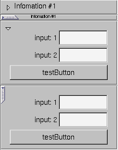

Fl_Group | +----Fl_Frametab
#include <Flek/Fl_Frametab.H>
Fl_Frametab provides a group that can be "collapsed" or "minimized".

|
|
The constructor for an empty Fl_Frametab.
Sets the type of tab. TRIANGLE = 0, BITMAP = 1 (Netscape Style)
Close the frame tab.
Open the frame tab.
Get or set the open size (height) of the frame tab widget.
Get or set wether you want the label to hide when the frame is open.
Utility function to return the current height difference when closed versus open (-height/+height) - min frame.
Fl_Pack* pko = (Fl_Pack*) v;
pko->begin();
Fl_Frametab* fto = new Fl_Frametab(0, 40, 240, 130, "Infomation #1");
if (toggle_type == 1)
toggle_type = 0;
else {
toggle_type = 1;
fto->labelsize(9);
}
fto->type(toggle_type);
{Fl_Button* o = new Fl_Button(20, 130, 200, 30, "testButton");}
{Fl_Input* o = new Fl_Input(120, 60, 100, 30, "input: 1"); }
{Fl_Input* o = new Fl_Input(120, 95, 100, 30, "input: 2"); }
fto->end();
fto->close();
pko->end();